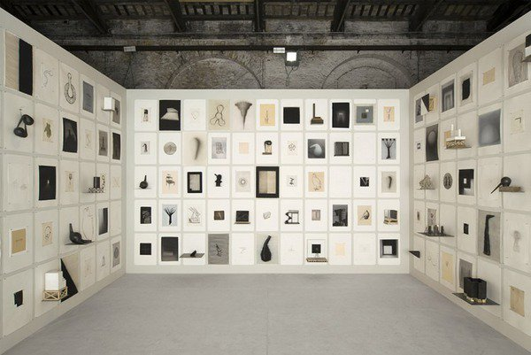
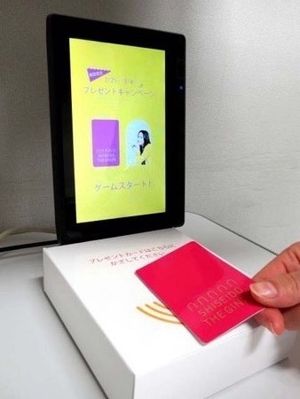

日常の無意識の選択から、自分でも気づいていない「好き」を可視化する体験
私は自分の「好き」があまり何かわらない。
もちろん、好きなものがないわけではない。
しかし、自分が心を動かされるものは、私にとってあまりにも当たり前の存在であり、意識して「好きだ」と認識することは少ない。
聴く音楽、観る映画、街で目を向ける場所、居心地のよい空間。それらは生活の中に自然と根付いている。
「好き」について考えたとき、最初に思い浮かんだのは、自分で好きだと思っていたものではなく、友人から言われたこと。
自分では意識していなかった。しかし、無意識に選び続けていたものばかりだった。
本人が気づいていない無意識の中に「好き」は、まだたくさん存在しているのではないだろうか。
「好き」を気づくことは、自分を知ることである。
「好き」を意識的に生活へ取り入れることで、日常は少しだけ豊かになるのではないだろうか。
本提案は、「好きなものを一つ選ぶ」というテーマに対し、あえて「好きなものがわからない」という課題から出発し、そこから「好きに気づく場と体験そのもの」を商品として提案する。
自分でも気づいていない「好き」を発見する体験を提案する。
無意識の選択から自分でも気づいていない「好き」を可視化する参加型インスタレーション

画像引用元: Undo.net
無意識の選択を促す空間設計
展示作品と多感覚素材:

画像引用元: PR TIMES
来場者の選択データと感性タグの共創結果を解析し、自分自身で共通点に気づくためのフィードバック画面である。
『好き』に気づく展は、一度きりの展示ではなく、各地域・美術館・商業施設・企業イベントなどへ巡回可能な体験型コンテンツとして展開できる。展示を重ねるほどタグデータが蓄積されるため、展示自体が成長し続ける。
また、蓄積された特徴データを活用することで、新たなサービスへの展開も期待できる。
展開サービスの可能性:
「自分に少し詳しく知ること」をきっかけに、
人々が日常をより意識的に楽しみ、
少し豊かに暮らせる社会の実現を目指す。
前段階としての提案
他の候補者が「特定の好きな商品・体験」を1つ選んでその価値最大化を提案するのに対し、本提案は人々が自分だけの「好き」を発見する体験と仕組みを提示。
この仕組み自体が、あらゆる商品やサービスと結びつくハブとなる。